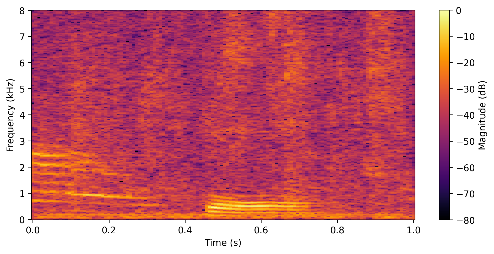
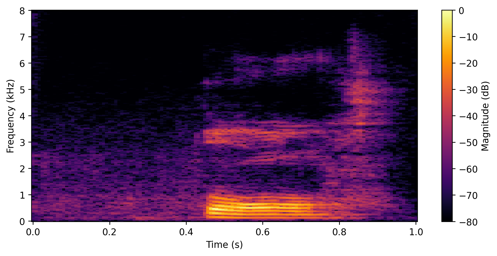
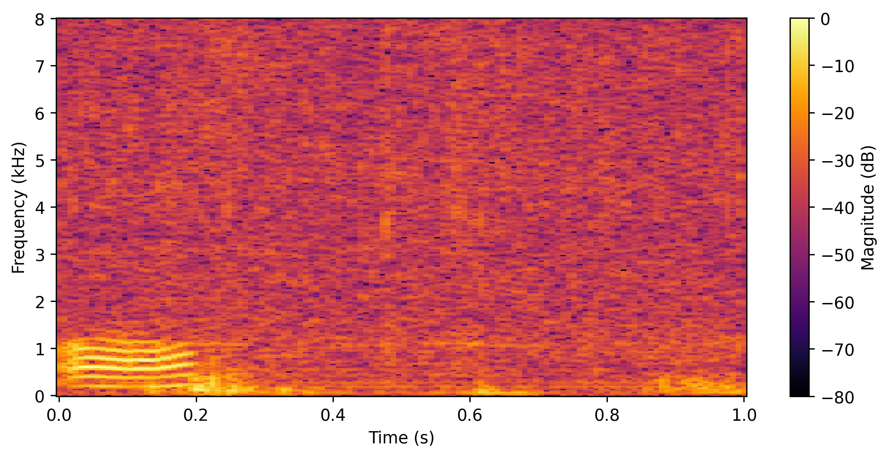
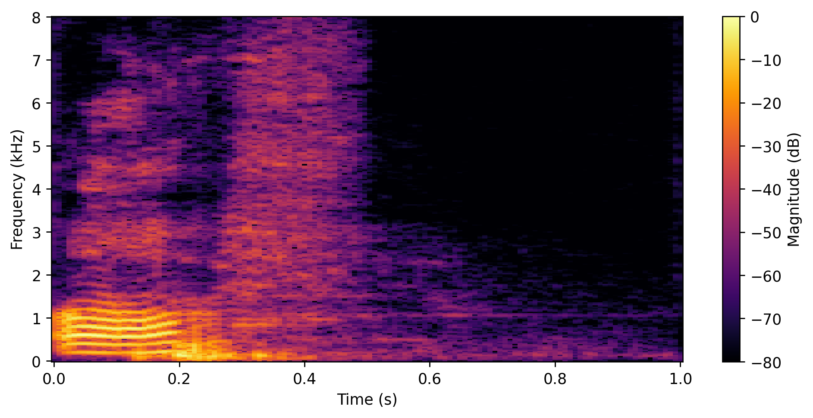
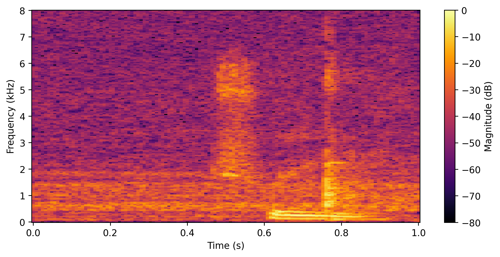
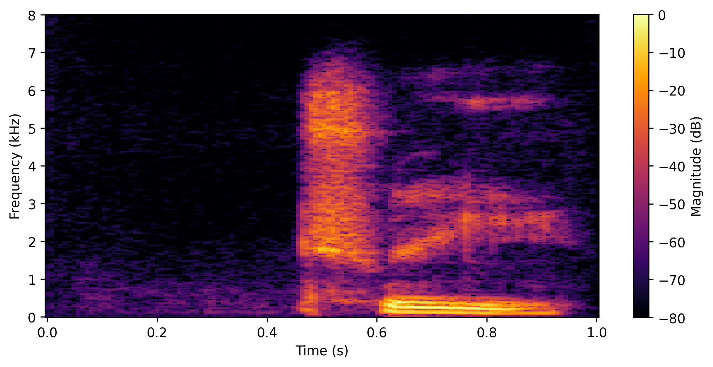
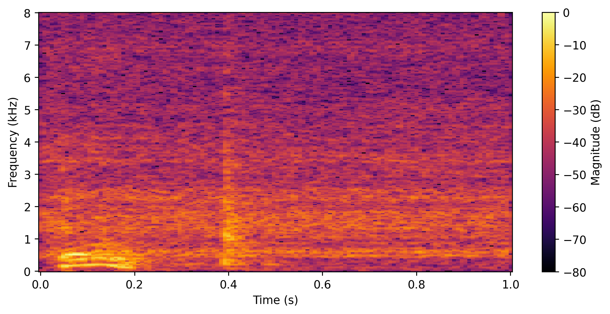
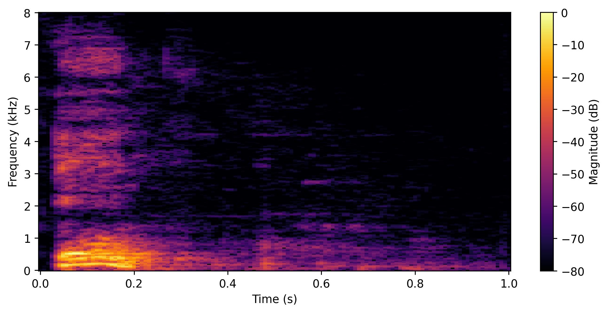

This demo presents examples from our speech enhancement
pipeline for robust keyword spotting (KWS).
Each example contains a spoken keyword mixed with
real-world background noise at different signal-to-noise
ratios (SNRs).
In the noisy condition, the keyword recognition model
produced an incorrect prediction.
After enhancement using an SGMSE model trained on our project dataset,
the correct keyword was successfully recovered.
These examples illustrate how speech enhancement improves
noise robustness and enables more reliable keyword
recognition.
Example 1
True Word: four | Noisy Prediction: no | Enhanced Prediction: four |
Noise: Cat Meowing | SNR: 2.5 dB
Noisy Prediction:
no
Enhanced Prediction:
four
Noisy Speech

Enhanced Speech

Example 2
True Word: off | Noisy Prediction: on | Enhanced Prediction: off |
Noise: Exercise Bike | SNR: 7.5 dB
Noisy Prediction:
on
Enhanced Prediction:
off
Noisy Speech

Enhanced Speech

Example 3
True Word: tree | Noisy Prediction: two | Enhanced Prediction: tree |
Noise: Dishwashing | SNR: 2.5 dB
Noisy Prediction:
two
Enhanced Prediction:
tree
Noisy Speech

Enhanced Speech

Example 4
True Word: go | Noisy Prediction: dog | Enhanced Prediction: go |
Noise: Doing the Dishes | SNR: 2.5 dB
Noisy Prediction:
dog
Enhanced Prediction:
go
Noisy Speech

Enhanced Speech

Example 5
True Word: bird | Noisy Prediction: bed | Enhanced Prediction: bird |
Noise: Exercise Bike | SNR: 7.5 dB